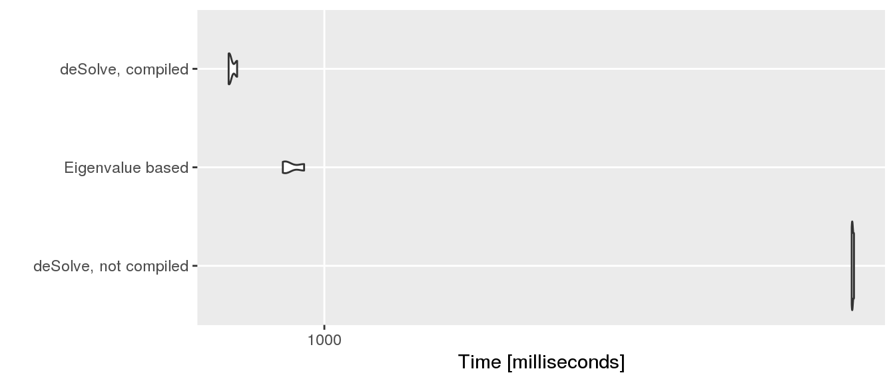
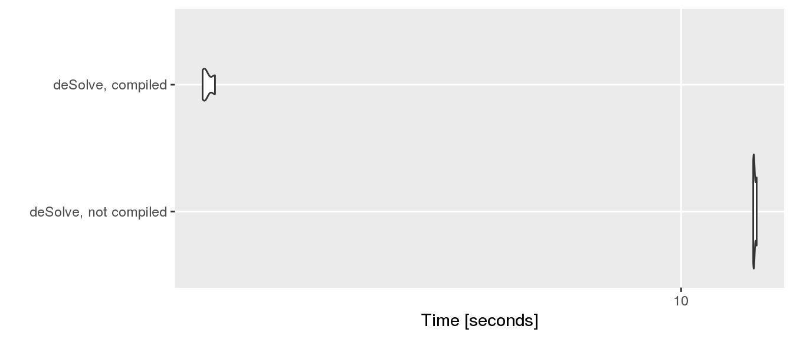

This evaluation is taken from the example section of mkinfit. When using an mkin version equal to or greater than 0.9-36 and a C compiler (gcc) is available, you will see a message that the model is being compiled from autogenerated C code when defining a model using mkinmod. The mkinmod() function checks for presence of the gcc compiler using
Sys.which("gcc")## gcc
## "/usr/bin/gcc"First, we build a simple degradation model for a parent compound with one metabolite.
## Successfully compiled differential equation model from auto-generated C code.We can compare the performance of the Eigenvalue based solution against the compiled version and the R implementation of the differential equations using the microbenchmark package.
library("microbenchmark")
library("ggplot2")
mb.1 <- microbenchmark(
"deSolve, not compiled" = mkinfit(SFO_SFO, FOCUS_2006_D,
solution_type = "deSolve",
use_compiled = FALSE, quiet = TRUE),
"Eigenvalue based" = mkinfit(SFO_SFO, FOCUS_2006_D,
solution_type = "eigen", quiet = TRUE),
"deSolve, compiled" = mkinfit(SFO_SFO, FOCUS_2006_D,
solution_type = "deSolve", quiet = TRUE),
times = 3, control = list(warmup = 0))## Warning in microbenchmark(`deSolve, not compiled` = mkinfit(SFO_SFO,
## FOCUS_2006_D, : Could not measure overhead. Your clock might lack
## precision.smb.1 <- summary(mb.1)
print(mb.1)## Unit: milliseconds
## expr min lq mean median uq
## deSolve, not compiled 6306.4527 6340.7895 6403.5937 6375.1264 6452.1643
## Eigenvalue based 918.0808 929.7217 948.9742 941.3626 964.4210
## deSolve, compiled 736.1337 753.6016 773.5605 771.0696 792.2739
## max neval cld
## 6529.2022 3 b
## 987.4793 3 a
## 813.4783 3 aautoplot(mb.1)
We see that using the compiled model is by a factor of 8.3 faster than using the R version with the default ode solver, and it is even faster than the Eigenvalue based solution implemented in R which does not need iterative solution of the ODEs:
rownames(smb.1) <- smb.1$expr
smb.1["median"]/smb.1["deSolve, compiled", "median"]## median
## deSolve, not compiled 8.267900
## Eigenvalue based 1.220853
## deSolve, compiled 1.000000This evaluation is also taken from the example section of mkinfit.
## Successfully compiled differential equation model from auto-generated C code.mb.2 <- microbenchmark(
"deSolve, not compiled" = mkinfit(FOMC_SFO, FOCUS_2006_D,
use_compiled = FALSE, quiet = TRUE),
"deSolve, compiled" = mkinfit(FOMC_SFO, FOCUS_2006_D, quiet = TRUE),
times = 3, control = list(warmup = 0))## Warning in microbenchmark(`deSolve, not compiled` = mkinfit(FOMC_SFO,
## FOCUS_2006_D, : Could not measure overhead. Your clock might lack
## precision.smb.2 <- summary(mb.2)
print(mb.2)## Unit: seconds
## expr min lq mean median uq
## deSolve, not compiled 13.604720 13.667244 13.689764 13.729768 13.732286
## deSolve, compiled 1.305077 1.311124 1.328943 1.317172 1.340876
## max neval cld
## 13.734804 3 b
## 1.364579 3 asmb.2["median"]/smb.2["deSolve, compiled", "median"]## median
## 1 NA
## 2 NAautoplot(mb.2)
Here we get a performance benefit of a factor of 10.4 using the version of the differential equation model compiled from C code!
This vignette was built with mkin 0.9.44.9000 on
## R version 3.3.2 (2016-10-31)
## Platform: x86_64-pc-linux-gnu (64-bit)
## Running under: Debian GNU/Linux 8 (jessie)## CPU model: Intel(R) Core(TM) i7-4710MQ CPU @ 2.50GHz